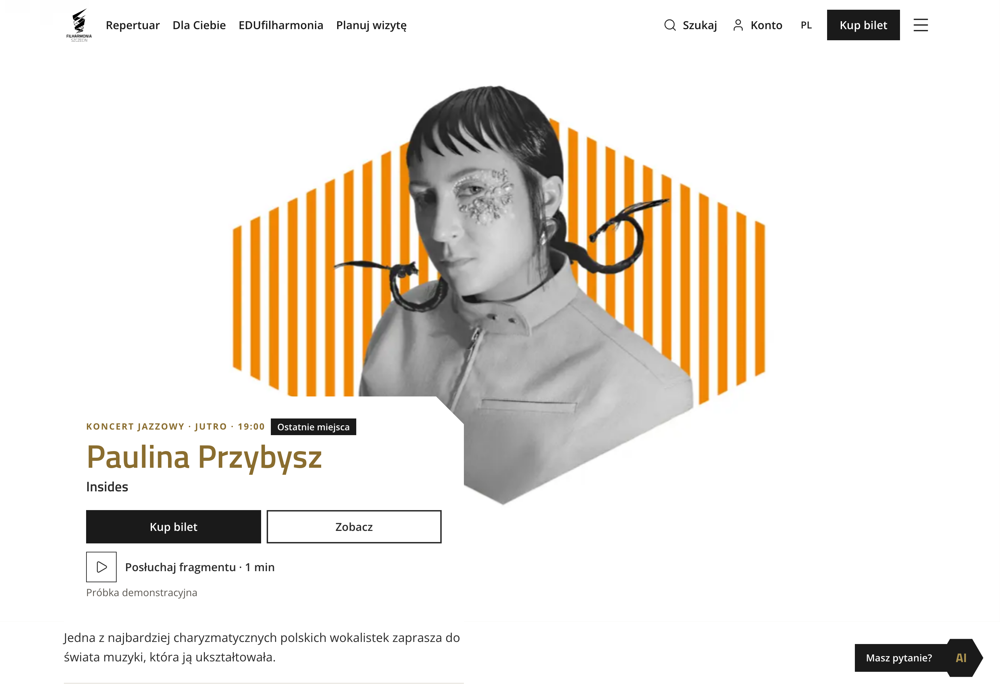
Desktop · Strona główna — koncert wiodący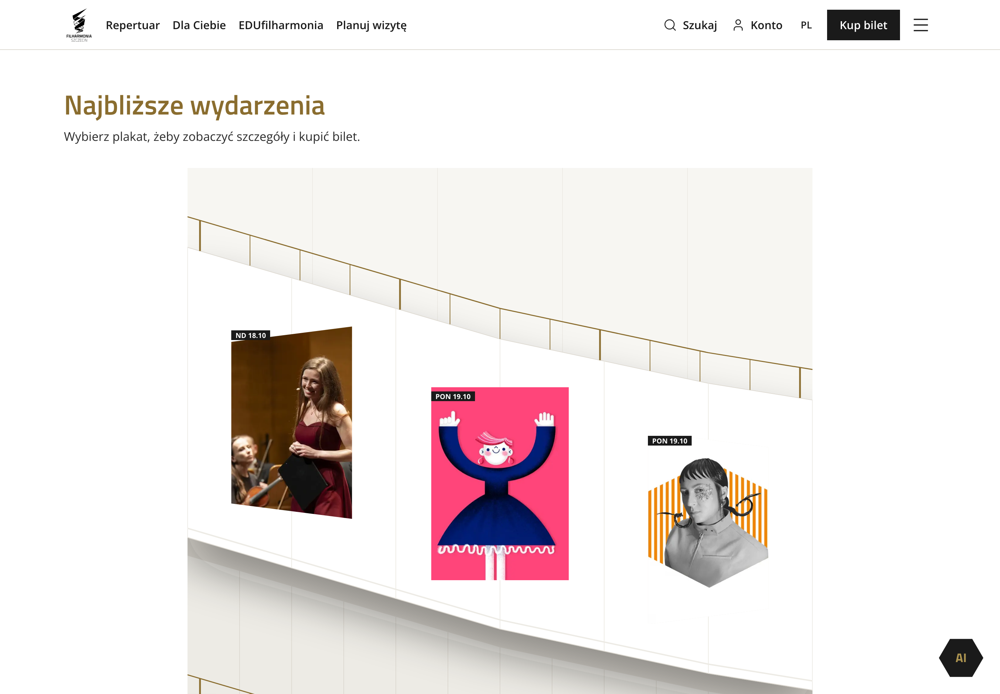
Desktop · Strona główna — przestrzenna prezentacja najbliższych koncertów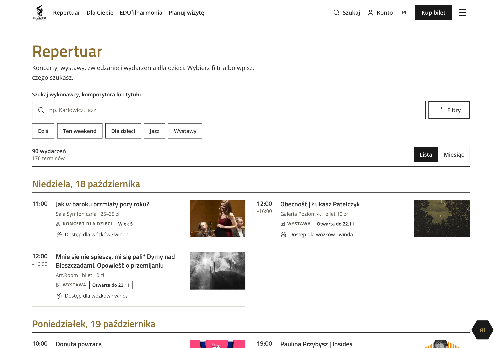
Desktop · Repertuar i kalendarz wydarzeń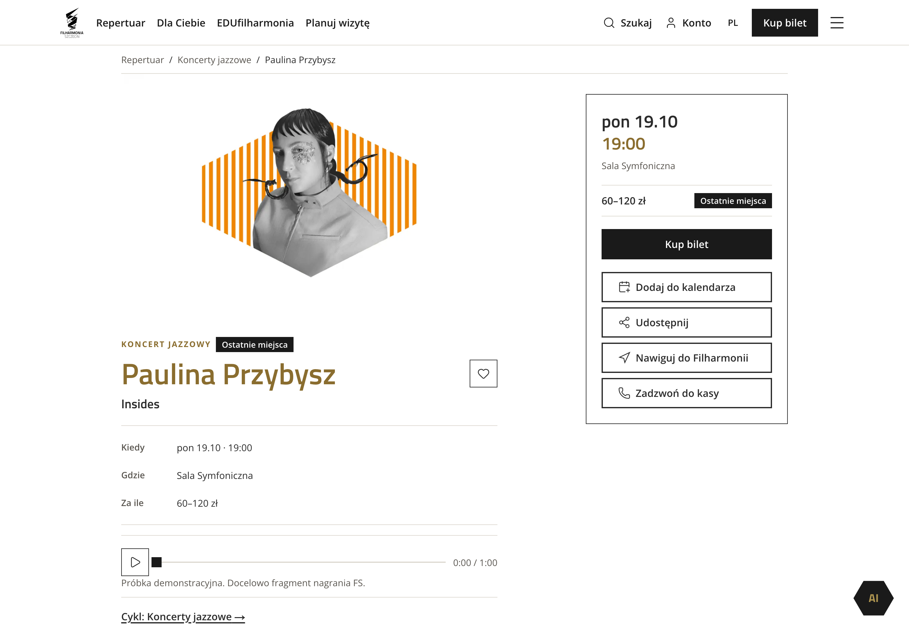
Desktop · Szczegóły koncertu Pauliny Przybysz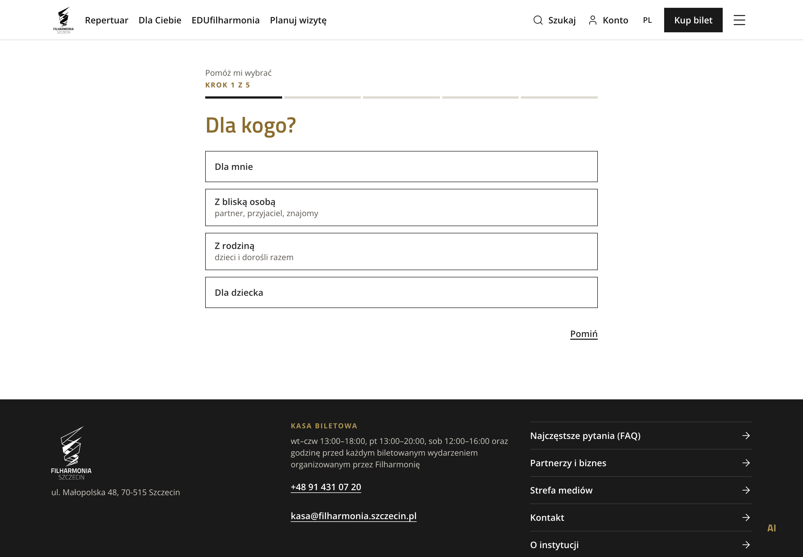
Desktop · Kreator doboru koncertu — pierwszy krok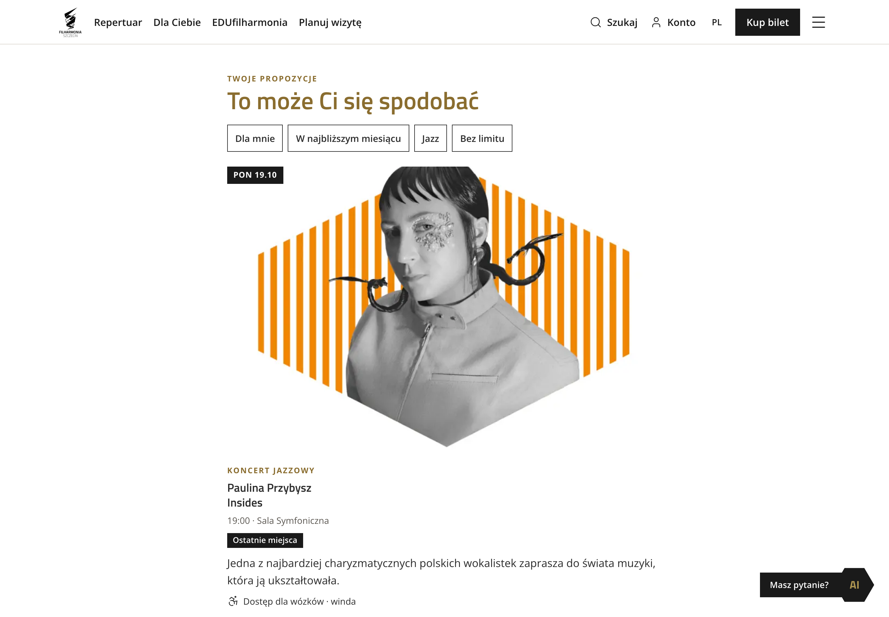
Desktop · Kreator — propozycje po udzieleniu odpowiedzi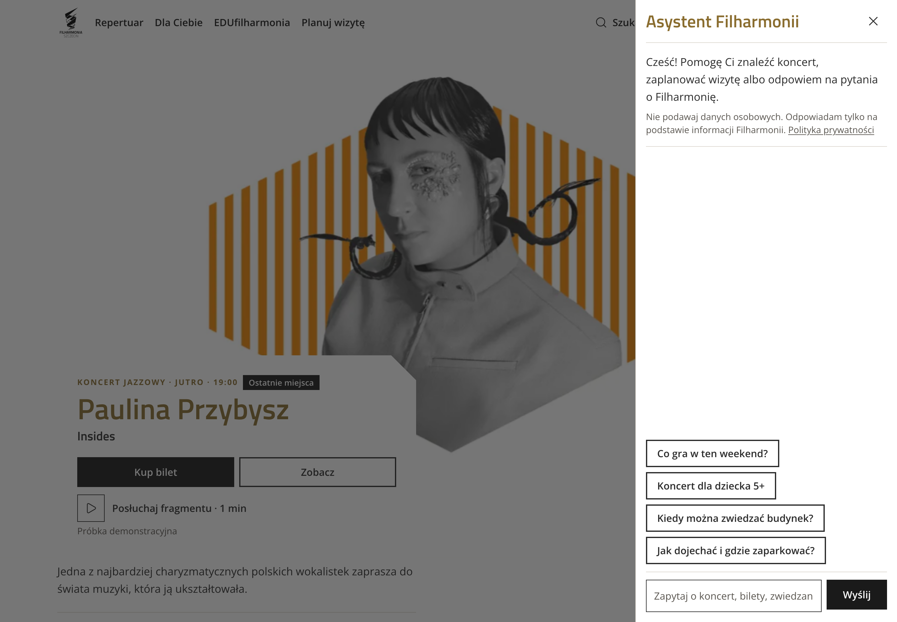
Desktop · Asystent AI — panel rozmowy i sugerowane pytania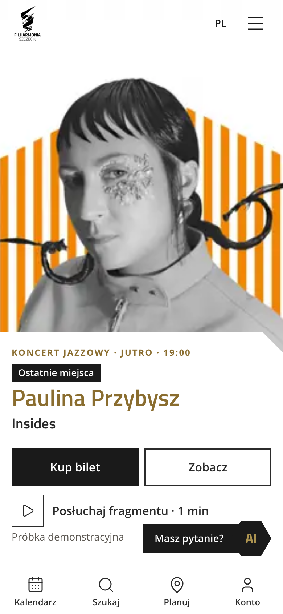
Mobile · Strona główna — koncert wiodący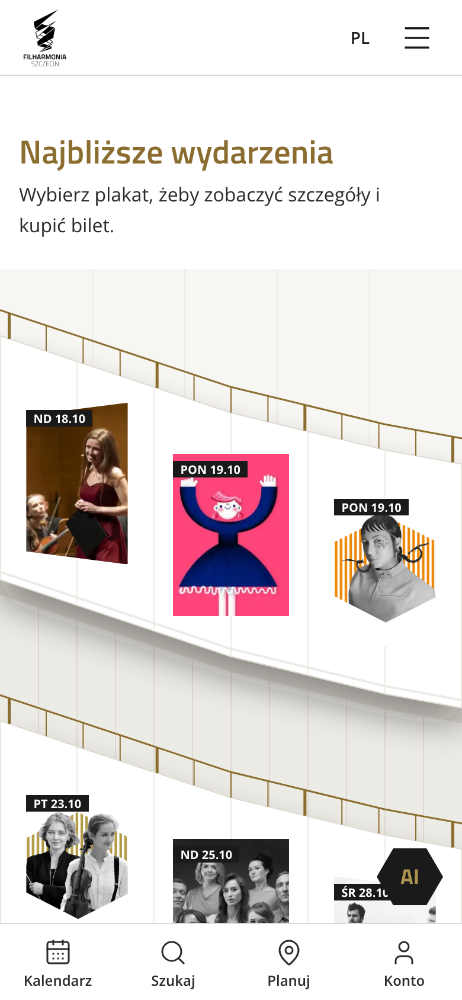
Mobile · Strona główna — przestrzenna prezentacja najbliższych koncertów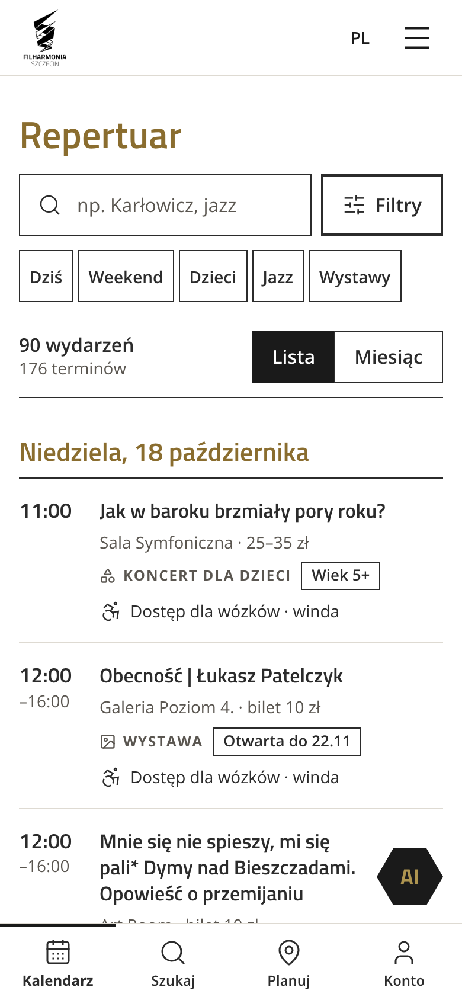
Mobile · Repertuar i kalendarz wydarzeń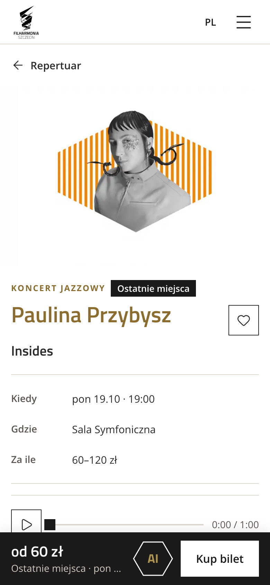
Mobile · Szczegóły koncertu Pauliny Przybysz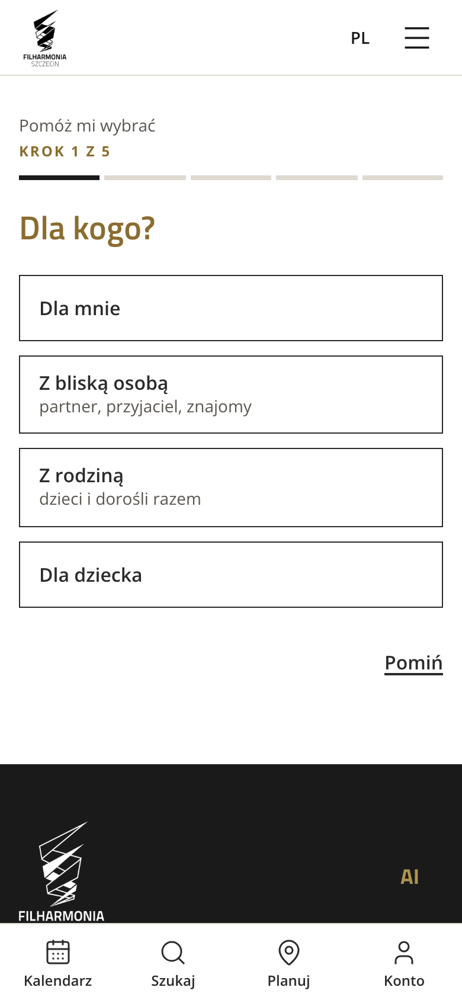
Mobile · Kreator doboru koncertu — pierwszy krok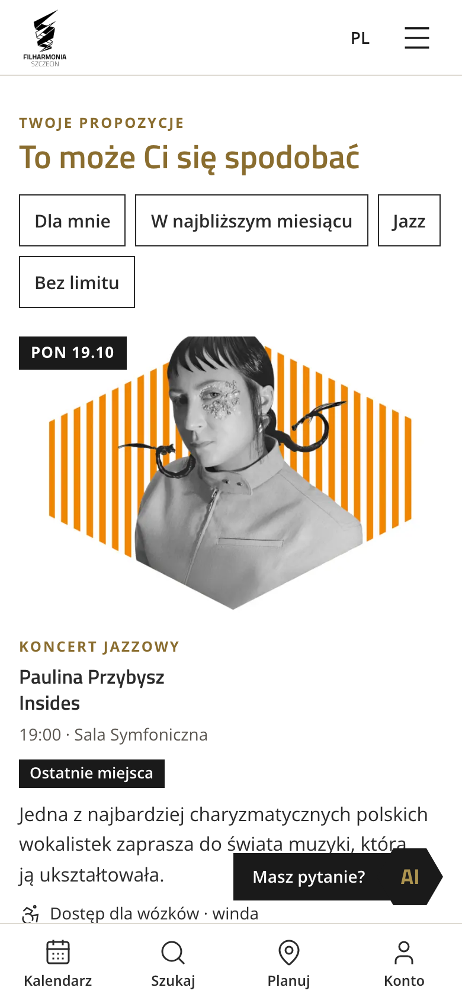
Mobile · Kreator — propozycje po udzieleniu odpowiedzi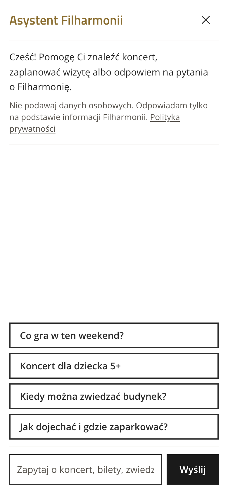
Mobile · Asystent AI — panel rozmowy i sugerowane pytania